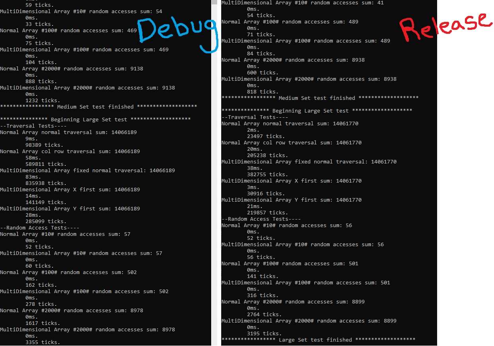
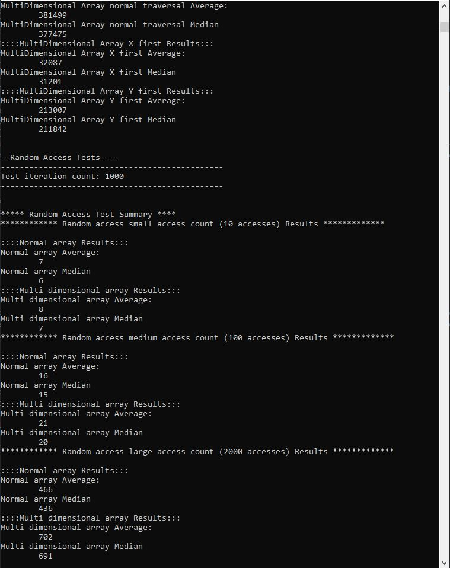
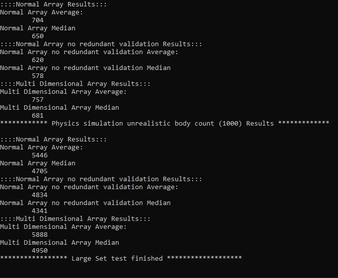

In a previous post I mentioned my choice to use 1D arrays for some of my map structures because I did a bit of research and found that supposedly there is a decent performance difference between using multidimensional arrays in C# as opposed to jagged arrays or just normal 1D arrays. I said I was just going to take the internet's word for it and move forward with 1D array structures where I just store 2D or 3D maps in one continuous array. This hasn't been too inconvenient, mostly just using some methods to calculate the array index from either a 2D coord or a 3D coord for when that is the most efficient way to find the element (aka when something is being positioned using its coordinate, or some other similar circumstance). However, I noticed I had begun duplicating functionality in the codebase for this since I had no central map structure to store this functionality. A method snuck its way into the Heightmap class: GetIndexFromCoord(int col, int row). Then another in the tilemap: CoordToIndex(int col, int row). Other similar functions existed in both that did the reverse as well: GetCoordFromIndex(int arrayIndex), and IndexToCoord(int arrayIndex) respectivly.
There was no true problem in having this functionality duplicated, both performed the same function correctly and were called in isolation to operations related to their respective classes. I had some free time and wanted to clean up some of this code since it could be a problem in the future, and its at least a little confusing to have multiple methods doing the same thing strewn across the codebase, sounds like a bug in the future just waiting to happen. So I began making a Map class to act as a component in these other classes that contains just information about the nature of the map structure for that class and nothing more. It would describe the map dimensions, and provide helpful utility methods for calcuating the array index from a coordinate and vice versa. Here is a basic look at what that class would look like:
public class MapProperties {
public readonly int Columns; //X-axis in concept
public readonly int Rows; //Y-axis in concept
public readonly int Planes; //Z-axis in concept
//Cached values since these calculations will be used many many times per frame.
private int _columnsTimesRows;
private int _maxValidIndex;
public MapProperties(int columns, int rows, int planes) {
if (columns <= 0 || rows <= 0 || planes <= 0)
throw new Exception("Cannot make a map with 0 in any dimension");
Columns = columns;
Rows = rows;
Planes = planes;
_columnsTimesRows = Columns * Rows;
_maxValidIndex = (Columns * Rows * Planes)-1;
}
public int IndexFromCoord(int column, int row, int plane) {
validateCoord(column, row, plane);
//Return array index
}
public int IndexFromCoord(Vector3 coord) {
validateCoord(coord);
//Return array index
}
public Vector3 CoordFromIndex(int arrayIndex) {
validateIndex(arrayIndex);
//Return Vector3 coord
}
public int ColumnFromIndex(int arrayIndex) {
validateIndex(arrayIndex);
//return just the column
}
public int RowFromIndex(int arrayIndex) {
validateIndex(arrayIndex);
//Return just the row
}
public int PlaneFromIndex(int arrayIndex) {
validateIndex(arrayIndex);
//return just the plane
}
private void validateCoord(Vector3 coord) {
if (coord.X < 0 || coord.X >= Columns || coord.Y < 0 || coord.Y >= Rows || coord.Z < 0 || coord.Z >= Planes)
throw new Exception("Invalid map coordinate.");
}
private void validateCoord(int column, int row, int plane) {
if (column < 0 || column >= Columns || row < 0 || row >= Rows || plane < 0 || plane >= Planes)
throw new Exception("Invalid map coordinate.");
}
private void validateIndex(int arrayIndex) {
if (arrayIndex < 0 || arrayIndex > _maxValidIndex)
throw new Exception("Invalid array index given the map dimensions.");
}
}
This version of the class covers 2D and 3D maps in the same class, but I could make MapProperties abstract, and then make a MapProperties2D and a MapProperties3D with a shallow inheritance pool, that way there is never more data or operations happening than absolutely needed.
But then I thought: "well if I'm going to pack all this information in here why not just include the data itself and make a generic class that can just be a map with all the utility functions and the actual data". If I want to make the class as easily usable as possible I can just leave the data exposed so it would basically just be like a normal array with the addition of methods specially tailored for my strange 1D approach. Then it dawned on me: "I'm just programming a strange alternate reality version of a multi dimensional array. It allows for multiple dimensions, allows a way to quickly access elements by a coordinate, throws an exception if the coordinate is out of range... oh no". Now I had to seriously think about the implications. If I was going to effectivly re-make the interface of a standard multi-dimensional array it needed to at least be more efficient like I had found in my research, or else this is just a messier version of a built-in feature of the language that would for certain be more efficient than mine. This is a thought that would have been useful when I made the decision to use 1D arrays to begin with, but now its a learning experience™.
So since I was already basically pre-maturally optimizing for the sake of education, I decided to just stick to it and run some of my own tests. After all, I rarely validate facts like this on my own machine so this would be a useful exercise. So I started up a new solution in Visual Studio and started writing some test code.
Now I'm not super knowledgeable about the most perfect ways to test program performance in this manner. I know I could use profiling tools and the like, but that felt more applicable to use when testing my actual game for performance problems since it would be much more complicated and much much less of a controlled environment. So I went with the classic Stopwatch class included in System.Diagnostics. From what I understand this wont be an absolutely perfect indicator of program speed, but for a rough idea this would be good enough. Now that I knew how I was going to do this, I needed to confirm a couple things:
Sorry about the page length by the way, there will be a lot of code samples and screenshots but its worth it to show the full process. Anyway, I'll save that last question for later, first I set up a basic structure for duplicating the test I want to perform so I dont have to hurt my hand "CTRL+C CTRL+V-ing" code all over the place. Remember, this is all just to answer some questions, so if I spend too little time on the test I could get inaccurate results, but if I spend too much time on it I'm just wasting time I could have been using on actually working on features for my game (Not to say testing and researching aren't "work" but you know what I mean). I create a class to represent a single "test" with certain parameters, so I could just change these parameters and make a new instance and run the tests easily:
public class ArraySpeedTesting {
public string testName = "";
public int[] NormalArray;
public int[,] MultiDimensionalArray;
public int Width;
public int Height;
private int _maxValidIndex;
public ArraySpeedTesting(string testName, int width, int height) {
this.testName = testName;
NormalArray = new int[width * height];
MultiDimensionalArray = new int[width, height];
Width = width;
Height = height;
_maxValidIndex = width * height - 1;
}
}
This is important so I can test on different sample sizes. Perhaps multi-dimensional arrays are slower at smaller sample sizes but for larger sample sizes they accel? So I need to run tests on various sample sizes just in case. Its important to note again that what will matter in the end is what size I think will represent my game the most accurately. The answer can't be known for sure since I dont have a finished game after all, but I can estimate based on how I want the game to work.
Now the arrays need to filled with data so I have some fake data to do fake operations on so that my test case matches my actual problem as closely as it can without just re-creating my game structure completely. I need to make sure the data filled in both arrays is the exact same to eliminate any extra factors, so I use a seeded Random() object to generate the numbers for both arrays and assign them to the exact same equivalent positions in each array:
public void FillArraysWithRandomData(int lowerRange, int upperRange) {
DateTime now = DateTime.Now;
Random rand = new Random((int)now.Ticks); //Using the classic current-time trick to get a new seed
for(int i = 0;i < Width*Height; ++i) {
int col = ColumnFromIndex(i);
int row = RowFromIndex(i);
int nextRand = rand.Next(lowerRange, upperRange);
NormalArray[i] = nextRand;
MultiDimensionalArray[col, row] = nextRand;
}
}
As shown in the previous code sample I wrote some of the same helper methods I talked about earlier:
private void validateCoord(int col, int row) {
if(col < 0 || col >= Width || row < 0 || row >= Height) {
throw new Exception("Invalid coord");
}
}
private void validateIndex(int index) {
if(index < 0 || index > _maxValidIndex) {
throw new Exception("Invalid index");
}
}
Note that these methods throw exceptions to match my code as closely as possible, but later I will make new versions of these methods that just return a bool to see how much this type of validation slows down the tests. Now I make a couple methods to speed test. I try to create a comperable test for each array type. For example, you would not traverse the 1D array through a double for-loop because its kinda the whole point that you dont have to do that in the 1D array. But in the actual game code a circumstance could arise where that is the most direct way to perform a certain operation so I want to test even cases like that where its clearly sub-optimal but it might be forced by the structure of surrounding code. That being said here are the basic test methods I wrote:
public int SumNormalArrayNormalTraversal() {
int sum = 0;
for(int i = 0;i < NormalArray.Length; ++i) {
sum += NormalArray[i];
}
return sum;
}
public int SumNormalArrayColRowTraversal() {
int sum = 0;
for(int col = 0;col < Width; ++col) {
for(int row = 0;row < Height; ++row) {
int index = IndexFromCoord(col, row);
sum += NormalArray[index];
}
}
return sum;
}
public int NormalArrayRandomAccessSum(int numberOfAccesses, int randSeed) {
Random rand = new Random(randSeed);
int sum = 0;
for(int i =0;i < numberOfAccesses; ++i) {
int randIndex = rand.Next(0, NormalArray.Length-1);
sum += NormalArray[randIndex];
}
return sum;
}
public int MultiDimensionalArrayRandomAccessSum(int numberOfAccesses, int randSeed) {
Random rand = new Random(randSeed);
int sum = 0;
for(int i =0;i < numberOfAccesses; ++i) {
int randIndex = rand.Next(0, MultiDimensionalArray.Length-1);
int col = ColumnFromIndex(randIndex);
int row = RowFromIndex(randIndex);
sum += MultiDimensionalArray[col, row];
}
return sum;
}
public int SumMultiDimensionalNormalTraversal() {
int sum = 0;
for(int i =0;i < MultiDimensionalArray.Length; ++i) {
int x = ColumnFromIndex(i);
int y = RowFromIndex(i);
sum += MultiDimensionalArray[x,y];
}
return sum;
}
public int SumMultiDimensionalArrayXFirst() { //important to test x vs y driven loops
int sum = 0;
for(int x = 0; x < Width; ++x) {
for(int y = 0; y < Height; ++y) {
sum += MultiDimensionalArray[x, y];
}
}
return sum;
}
public int SumMultiDimensionalArrayYFirst() {
int sum = 0;
for (int y = 0; y < Height; ++y) {
for (int x = 0; x < Width; ++x) {
sum += MultiDimensionalArray[x, y];
}
}
return sum;
}
In the previous code sample I use the term "normal" traversal to describe a straight single index traversal from the beginning to the end of the array. Again that type of traversal would be very strange for a multi-dimensional array but I tested it nonetheless. I also perform a basic sum operation for each of these tests. I'm not fully convinced of how good of a test doing a simple sum is, but I assume calling methods and other static functions should be a linear cost in performance so just a sum should be enough to see the trend. If I had tons of time to deep dive into this I would figure out the cost of calling methods from classes vs static functions vs simple primitive operations like addition. In C++ resolving method calls from object instances involves overhead like going through a V-table lookup to resolve where the actual function is located so it can be called. But a C# specialist I am not. Nor do I have the time to learn all about C#'s IL (intermediate language) or the implications that the JIT compilation could have on this so I'll stick to a simple sum.
The sum also serves another purpose in the test though. I can display the sum after the test to confirm that the sum from both methods match. That will confirm that both methods are logically the same, and that all the data was set up correctly, which is extremely important for the accuracy of the results.
With some basic structure in place, I wanted to test what I had so far so I wrote up what will become the basic testing structure: a method in the ArraySpeedTesting class to perform the tests and display the results, and an orchestrating code section to drive the tests (the Main method, it's not that deep).
public static void PerformSpeedTest(ArraySpeedTesting test, int lowerValue, int upperValue, Stopwatch stopwatch) {
Console.WriteLine($"*************** Beginning {test.testName} test *******************");
stopwatch.Reset();
test.FillArraysWithRandomData(lowerValue, upperValue);
Console.WriteLine("--Traversal Tests----");
int sum = 0;
stopwatch.Start();
sum = test.SumNormalArrayNormalTraversal();
stopwatch.Stop();
Console.WriteLine($"Normal Array normal traversal sum: {sum} \n\t{stopwatch.ElapsedMilliseconds}ms.\n\t{stopwatch.ElapsedTicks} ticks.");
stopwatch.Restart();
sum = test.SumNormalArrayColRowTraversal();
stopwatch.Stop();
Console.WriteLine($"Normal Array col row traversal sum: {sum} \n\t{stopwatch.ElapsedMilliseconds}ms.\n\t{stopwatch.ElapsedTicks} ticks.");
stopwatch.Restart();
sum = test.SumMultiDimensionalNormalTraversal();
stopwatch.Stop();
Console.WriteLine($"MultiDimensional Array fixed normal traversal: {sum} \n\t{stopwatch.ElapsedMilliseconds}ms.\n\t{stopwatch.ElapsedTicks} ticks.");
stopwatch.Restart();
sum = test.SumMultiDimensionalArrayXFirst();
stopwatch.Stop();
Console.WriteLine($"MultiDimensional Array X first sum: {sum} \n\t{stopwatch.ElapsedMilliseconds}ms.\n\t{stopwatch.ElapsedTicks} ticks.");
stopwatch.Restart();
sum = test.SumMultiDimensionalArrayYFirst();
stopwatch.Stop();
Console.WriteLine($"MultiDimensional Array Y first sum: {sum} \n\t{stopwatch.ElapsedMilliseconds}ms.\n\t{stopwatch.ElapsedTicks} ticks.");
Console.WriteLine("--Random Access Tests----");
int randSeed = (int)DateTime.Now.Ticks;
int numberOfAccesses = 10;
stopwatch.Restart();
sum = test.NormalArrayRandomAccessSum(numberOfAccesses, randSeed);
stopwatch.Stop();
Console.WriteLine($"Normal Array #{numberOfAccesses}# random accesses sum: {sum} \n\t{stopwatch.ElapsedMilliseconds}ms.\n\t{stopwatch.ElapsedTicks} ticks.");
stopwatch.Restart();
sum = test.MultiDimensionalArrayRandomAccessSum(numberOfAccesses, randSeed);
stopwatch.Stop();
Console.WriteLine($"MultiDimensional Array #{numberOfAccesses}# random accesses sum: {sum} \n\t{stopwatch.ElapsedMilliseconds}ms.\n\t{stopwatch.ElapsedTicks} ticks.");
numberOfAccesses = 100;
stopwatch.Restart();
sum = test.NormalArrayRandomAccessSum(numberOfAccesses, randSeed);
stopwatch.Stop();
Console.WriteLine($"Normal Array #{numberOfAccesses}# random accesses sum: {sum} \n\t{stopwatch.ElapsedMilliseconds}ms.\n\t{stopwatch.ElapsedTicks} ticks.");
stopwatch.Restart();
sum = test.MultiDimensionalArrayRandomAccessSum(numberOfAccesses, randSeed);
stopwatch.Stop();
Console.WriteLine($"MultiDimensional Array #{numberOfAccesses}# random accesses sum: {sum} \n\t{stopwatch.ElapsedMilliseconds}ms.\n\t{stopwatch.ElapsedTicks} ticks.");
numberOfAccesses = 2000;
stopwatch.Restart();
sum = test.NormalArrayRandomAccessSum(numberOfAccesses, randSeed);
stopwatch.Stop();
Console.WriteLine($"Normal Array #{numberOfAccesses}# random accesses sum: {sum} \n\t{stopwatch.ElapsedMilliseconds}ms.\n\t{stopwatch.ElapsedTicks} ticks.");
stopwatch.Restart();
sum = test.MultiDimensionalArrayRandomAccessSum(numberOfAccesses, randSeed);
stopwatch.Stop();
Console.WriteLine($"MultiDimensional Array #{numberOfAccesses}# random accesses sum: {sum} \n\t{stopwatch.ElapsedMilliseconds}ms.\n\t{stopwatch.ElapsedTicks} ticks.");
Console.WriteLine($"***************** {test.testName} test finished *******************\n");
}
using System.Diagnostics;
ArraySpeedTesting smallSet = new ArraySpeedTesting("Small Set", 20, 10);
ArraySpeedTesting medSet = new ArraySpeedTesting("Medium Set", 200, 100);
ArraySpeedTesting largeSet = new ArraySpeedTesting("Large Set", 2500, 1250);
Stopwatch stopwatch = new Stopwatch();
ArraySpeedTesting.PerformSpeedTest(smallSet, 0, 10, stopwatch);
ArraySpeedTesting.PerformSpeedTest(medSet, 0, 10, stopwatch);
ArraySpeedTesting.PerformSpeedTest(largeSet, 0, 10, stopwatch);
I don't know why I made the PerformSpeedTest method static. I think I just wanted to rebel again my OOP overlords and acted out, I dunno. It doesn't really matter here anyway so ignoring that, lets look at what this code outputs:
It is important to run the tests in Debug and Release mode so that you can see the influence of compiler optimizations. From this one test I can sort of see a trend emerging but far more tests need to be run to make any conclusions. While it would be fun to sit down and just run tests and hand-calculate the results of 100 tests, I'm already programming so I may as well let the computer do that for me. Problem is I could easily make the computer do what I just did 100 times, but I would still have to look over the results myself so I would save basically no time. So I need to make a quick structure to describe the inner-workings of the tests so that I can have my program compile the results for me as well. For the sake of brevity I won't explain how I came up with this code, but basically I just hacked this together quickly so I don't waste time.
private class ResultsData { //The collection of related tests compiled into one list
string testName;
//I notated the dictionary this way so the auto code-markup thing I wrote to color-code code samples doesn't mess up.
//Always more to fix. Pretend those are angle brackets.
Dictionary(string, List(TestResult)) results;
public ResultsData(string name) {
testName = name;
results = new Dictionary(string, List(TestResult))();
}
public void AddTestResult(TestResult result) {
if (!results.ContainsKey(result.testName)) {
results[result.testName] = new List(TestResult)();
}
results[result.testName].Add(result);
}
public void SummarizeResults() {
Console.WriteLine($"************ {testName} Results *************\n");
//Sort by greater ticks
foreach(var pair in results) {
Console.WriteLine($"::::{pair.Key} Results:::");
pair.Value.Sort(delegate (TestResult a, TestResult b) {
if (a.elapsedTicks > b.elapsedTicks) return 1;
else if (a.elapsedTicks < b.elapsedTicks) return -1;
else return 0;
});
Console.WriteLine($"{pair.Key} Average:");
long average = 0;
for(int i = 0;i < pair.Value.Count; ++i) {
average += pair.Value[i].elapsedTicks;
}
Console.WriteLine($"\t{average/pair.Value.Count}");
Console.WriteLine($"{pair.Key} Median");
Console.WriteLine($"\t{pair.Value[pair.Value.Count/2].elapsedTicks}");
}
}
}
private class TestResult { //The result of an individual test
public string testName;
public long elapsedMs;
public long elapsedTicks;
public TestResult(string name, long ms, long ticks) {
testName = name;
elapsedMs = ms;
elapsedTicks = ticks;
}
}
I didn't draft that up first try, but after a couple minutes of messing around with it I landed on this to let me compile test results and get their results. Now I have to use this in my tests. After rewriting to use the results summary:
public static void PerformSpeedTest(ArraySpeedTesting test, int lowerValue, int upperValue, Stopwatch stopwatch) {
Console.WriteLine($"*************** Beginning {test.testName} test *******************");
stopwatch.Reset();
test.FillArraysWithRandomData(lowerValue, upperValue);
int randSeed = (int)DateTime.Now.Ticks;
test.TraversalTest(stopwatch, randSeed, 1000, true);
test.RandomAccessTest(stopwatch, randSeed, 1000, true);
//test.PhysicsSystemTest(stopwatch, randSeed, 1000, true); How did you sneak in here, it's almost like I wrote this blog post after the fact
Console.WriteLine($"***************** {test.testName} test finished *******************\n");
}
private void TraversalTest(Stopwatch stopwatch, int randSeed, int iterationCount, bool summaryOnly) {
int sum = 0;
Console.WriteLine("\n\n--Traversal Tests----");
Console.WriteLine("-----------------------------------------------");
Console.WriteLine($"Test iteration count: {iterationCount}");
Console.WriteLine("-----------------------------------------------\n");
ResultsData traversalResults = new ResultsData("Array Traversing");
for(int i =0;i < iterationCount; ++i) {
stopwatch.Start();
sum = SumNormalArrayNormalTraversal();
stopwatch.Stop();
if(!summaryOnly) Console.WriteLine($"Normal Array normal traversal sum: {sum} \n\t{stopwatch.ElapsedMilliseconds}ms.\n\t{stopwatch.ElapsedTicks} ticks.");
traversalResults.AddTestResult(new TestResult("Normal Array normal traversal", stopwatch.ElapsedMilliseconds, stopwatch.ElapsedTicks));
stopwatch.Restart();
sum = SumNormalArrayColRowTraversal();
stopwatch.Stop();
if (!summaryOnly) Console.WriteLine($"Normal Array col row traversal sum: {sum} \n\t{stopwatch.ElapsedMilliseconds}ms.\n\t{stopwatch.ElapsedTicks} ticks.");
traversalResults.AddTestResult(new TestResult("Normal Array col/row traversal", stopwatch.ElapsedMilliseconds, stopwatch.ElapsedTicks));
stopwatch.Restart();
sum = SumMultiDimensionalNormalTraversal();
stopwatch.Stop();
if (!summaryOnly) Console.WriteLine($"MultiDimensional Array fixed normal traversal: {sum} \n\t{stopwatch.ElapsedMilliseconds}ms.\n\t{stopwatch.ElapsedTicks} ticks.");
traversalResults.AddTestResult(new TestResult("MultiDimensional Array normal traversal", stopwatch.ElapsedMilliseconds, stopwatch.ElapsedTicks));
stopwatch.Restart();
sum = SumMultiDimensionalArrayXFirst();
stopwatch.Stop();
if (!summaryOnly) Console.WriteLine($"MultiDimensional Array X first sum: {sum} \n\t{stopwatch.ElapsedMilliseconds}ms.\n\t{stopwatch.ElapsedTicks} ticks.");
traversalResults.AddTestResult(new TestResult("MultiDimensional Array X first", stopwatch.ElapsedMilliseconds, stopwatch.ElapsedTicks));
stopwatch.Restart();
sum = SumMultiDimensionalArrayYFirst();
stopwatch.Stop();
if (!summaryOnly) Console.WriteLine($"MultiDimensional Array Y first sum: {sum} \n\t{stopwatch.ElapsedMilliseconds}ms.\n\t{stopwatch.ElapsedTicks} ticks.");
traversalResults.AddTestResult(new TestResult("MultiDimensional Array Y first", stopwatch.ElapsedMilliseconds, stopwatch.ElapsedTicks));
}
Console.WriteLine("\n***** Traversal Test Summary ****");
traversalResults.SummarizeResults();
}
private void RandomAccessTest(Stopwatch stopwatch, int randSeed, int iterationCount, bool summaryOnly) {
int sum = 0;
Console.WriteLine("\n\n--Random Access Tests----");
Console.WriteLine("-----------------------------------------------");
Console.WriteLine($"Test iteration count: {iterationCount}");
Console.WriteLine("-----------------------------------------------\n");
int numberOfAccesses = 10;
ResultsData smallAccessCountResults = new ResultsData($"Random access small access count ({numberOfAccesses} accesses)");
for (int i =0;i < iterationCount; ++i) {
stopwatch.Restart();
sum = NormalArrayRandomAccessSum(numberOfAccesses, randSeed);
stopwatch.Stop();
if(!summaryOnly) Console.WriteLine($"Normal Array #{numberOfAccesses}# random accesses sum: {sum} \n\t{stopwatch.ElapsedMilliseconds}ms.\n\t{stopwatch.ElapsedTicks} ticks.");
smallAccessCountResults.AddTestResult(new TestResult("Normal array", stopwatch.ElapsedMilliseconds, stopwatch.ElapsedTicks));
stopwatch.Restart();
sum = MultiDimensionalArrayRandomAccessSum(numberOfAccesses, randSeed);
stopwatch.Stop();
if (!summaryOnly) Console.WriteLine($"MultiDimensional Array #{numberOfAccesses}# random accesses sum: {sum} \n\t{stopwatch.ElapsedMilliseconds}ms.\n\t{stopwatch.ElapsedTicks} ticks.");
smallAccessCountResults.AddTestResult(new TestResult("Multi dimensional array", stopwatch.ElapsedMilliseconds, stopwatch.ElapsedTicks));
}
numberOfAccesses = 100;
ResultsData mediumAccessCountResults = new ResultsData($"Random access medium access count ({numberOfAccesses} accesses)");
for (int i = 0; i < iterationCount; ++i) {
stopwatch.Restart();
sum = NormalArrayRandomAccessSum(numberOfAccesses, randSeed);
stopwatch.Stop();
if (!summaryOnly) Console.WriteLine($"Normal Array #{numberOfAccesses}# random accesses sum: {sum} \n\t{stopwatch.ElapsedMilliseconds}ms.\n\t{stopwatch.ElapsedTicks} ticks.");
mediumAccessCountResults.AddTestResult(new TestResult("Normal array", stopwatch.ElapsedMilliseconds, stopwatch.ElapsedTicks));
stopwatch.Restart();
sum = MultiDimensionalArrayRandomAccessSum(numberOfAccesses, randSeed);
stopwatch.Stop();
if (!summaryOnly) Console.WriteLine($"MultiDimensional Array #{numberOfAccesses}# random accesses sum: {sum} \n\t{stopwatch.ElapsedMilliseconds}ms.\n\t{stopwatch.ElapsedTicks} ticks.");
mediumAccessCountResults.AddTestResult(new TestResult("Multi dimensional array", stopwatch.ElapsedMilliseconds, stopwatch.ElapsedTicks));
}
numberOfAccesses = 2000;
ResultsData largeAccessCountResults = new ResultsData($"Random access large access count ({numberOfAccesses} accesses)");
for (int i = 0; i < iterationCount; ++i) {
stopwatch.Restart();
sum = NormalArrayRandomAccessSum(numberOfAccesses, randSeed);
stopwatch.Stop();
if (!summaryOnly) Console.WriteLine($"Normal Array #{numberOfAccesses}# random accesses sum: {sum} \n\t{stopwatch.ElapsedMilliseconds}ms.\n\t{stopwatch.ElapsedTicks} ticks.");
largeAccessCountResults.AddTestResult(new TestResult("Normal array", stopwatch.ElapsedMilliseconds, stopwatch.ElapsedTicks));
stopwatch.Restart();
sum = MultiDimensionalArrayRandomAccessSum(numberOfAccesses, randSeed);
stopwatch.Stop();
if (!summaryOnly) Console.WriteLine($"MultiDimensional Array #{numberOfAccesses}# random accesses sum: {sum} \n\t{stopwatch.ElapsedMilliseconds}ms.\n\t{stopwatch.ElapsedTicks} ticks.");
largeAccessCountResults.AddTestResult(new TestResult("Multi dimensional array", stopwatch.ElapsedMilliseconds, stopwatch.ElapsedTicks));
}
Console.WriteLine("\n***** Random Access Test Summary ****");
smallAccessCountResults.SummarizeResults();
mediumAccessCountResults.SummarizeResults();
largeAccessCountResults.SummarizeResults();
}
Not much to explain here, I just rewrote the code to be iterable, and include the ResultsData system inside the tests to compile the speeds of each individual test. I split each section of the test into its own method for organization, it was getting just a bit too large of a method without splitting it up like this. For completeness here is what the results look like with 1000 iterations automatically tested (or a sample of the results that fits on the screen):
The results only use the stopwatch.ElapsedTicks value for calculations since milliseconds can round down to zero and mess up the calculation. That was a bit faster than running those numbers myself on a piece of paper. The only factor unaccounted for in this test is that the arrays dont have their data re-randomized between each iteration. I don't think this matters since what matters most is that the numbers are consistant across the two arrays and which memory locations are being read. I also forego listing all of the summary stats, and just list the mean and median. Some interesting results can be seen in the large sample size tests. The difference between a Y first traversal of the multi dimensional array vs a X first traversal is large. A Median of 211842 ticks, as opposed to 31201! Thats ~6.79 times slower just by traversing in a different order! I don't know for sure why this happens, but if I had to guess its probably some type of memory thrashing. The way the array is stored must cause this to load whole sections of the array into CPU cache and then instantly cache miss on the next iteration since Y-first loops skip around in memory. At least thats my not-very-informed theory. Maybe its an IL problem? Who knows, doesn't matter why right now, just that it will be slower.
As for the rest of the summary: as predicted Normal traversal of a 1D array is faster than doing a col/row traversal of the same array. More importantly, the 1D array traversal was faster than the multi dimensional array X traversal. A median of 19824 versus 31413, or ~1.585 times slower. So in a way this is good news! 1D arrays are confirmed to be faster to traverse at large sample sizes than a multi dimensional array, however this result is misleading. While it's true that a 1D array is faster, the deeper truth is both are plenty fast. If I was considering re-factoring a large portion of the code over this implementation detail, I would choose not to replace it since a ~1.5 times increase for numbers that are both lightning fast wont really matter. With that said how does the random access perform? In the results screenshot I showed earlier, you can see at large (in my test case: 2000) numbers of accesses we see similar results to the traversal. 436 ticks median vs 691, or ~1.58 times slower to use the Multi-dimensional array. Similar to the last example, this speed basically doesn't matter because they are both extremely very super fast.
Now that those results have been tested pretty well, I needed to go back to the last two questions. The question about the efficiency of using aggressive amounts of validation is somewhat answered by the previous results, since the validation was included in those tests, and they were already efficient enough. Removing the validation could only increase the speed of those results, but speed wasn't an issue. The final question does still need answering though. How will the arrays in my game be accessed most commonly? Not every system will access data in the same fashion but as far as the maps are concerned I needed to look for official proof in my code of how I was using each map the most. Since the heightmap and collisionmap (Which will have its own post, I know I haven't talked about it yet you just gotta trust me) are very related structures, I grouped them into one category, and put the tilemap in its own category.
After looking through the most of the code that runs per frame for the game, I counted 2 accesses to the heightmap during the physics update. Additionally there were 13 calls to the collision map in the physics code, and the physics code is incomplete so this number will surely go way up. These accesses happened on a per-physics body basis. So if there were only 4 physics bodies, there would be a total of 8 heightmap accesses, and 52 collisionmap accesses. The game will of course have far more than 4 bodies during any given frame, but that was just an example. I traced back how each access occurs and all 15 of them have some form of validation in the access call themselves (as opposed to me pre-validating the coords before asking for data from the maps), although the validations are all boolean and throw no exceptions. So now that we have a test case from the actual game code, I once again hacked up a somewhat equivalent test in my array testing program:
//Simulate the properties of the physics calculations as they relate to array access
public int PhysicsSystemNormalArraySimulation(int simulatedBodies, int randSeed) {
Random rand = new Random(randSeed);
int sum = 0; //Just to do some type of operation on the data that gets looked up
for(int i = 0;i < simulatedBodies; ++i) {
//2 accesses to heightmap using a calculated col/row related to the bodies position
//Calculation of col/row here will be simulated by using random numbers for the calculated col/row
int col = rand.Next(-1, Width+1);
int row = rand.Next(-1, Height+1);
sum += GetValueFromNormalArray(col, row);
sum += GetValueFromNormalArray(col, row);
//13 accesses to collisionMap data which use the already calculated col/row but checks values around them, so Ill just rerandomize the col/row here
for(int k =0;k < 13; k++) {
col = rand.Next(-1, Width+1);
row = rand.Next(-1, Height+1);
sum += GetValueFromNormalArray(col, row);
}
}
return sum;
}
//Simulate the properties of the physics calculations as they relate to array access
public int PhysicsSystemNormalArraySimulationNoExceptions(int simulatedBodies, int randSeed) {
Random rand = new Random(randSeed);
int sum = 0; //Just to do some type of operation on the data that gets looked up
for (int i = 0; i < simulatedBodies; ++i) {
//2 accesses to heightmap using a calculated col/row related to the bodies position
//Calculation of col/row here will be simulated by using random numbers for the calculated col/row
int col = rand.Next(-1, Width + 1);
int row = rand.Next(-1, Height + 1);
sum += GetValueFromNormalArrayNoExceptions(col, row);
sum += GetValueFromNormalArrayNoExceptions(col, row);
//13 accesses to collisionMap data which use the already calculated col/row but checks values around them, so Ill just rerandomize the col/row here
for (int k = 0; k < 13; k++) {
col = rand.Next(-1, Width + 1);
row = rand.Next(-1, Height + 1);
sum += GetValueFromNormalArrayNoExceptions(col, row);
}
}
return sum;
}
public int PhysicsSystemMultiDimensionalSimulation(int simulatedBodies, int randSeed) {
Random rand = new Random(randSeed);
int sum = 0; //Just to do some type of operation on the data that gets looked up
for (int i = 0; i < simulatedBodies; ++i) {
//2 accesses to heightmap using a calculated col/row related to the bodies position
//Calculation of col/row here will be simulated by using random numbers for the calculated col/row
int col = rand.Next(-1, Width+1); //Allow for out of bounds because in actual case, this will happen
int row = rand.Next(-1, Height+1);
sum += GetValueFromMultiDimensionalArray(col, row); //Index would not have been cached in the actual use case so I wont cache it here
sum += GetValueFromMultiDimensionalArray(col, row);
//13 accesses to collisionMap data which use the already calculated col/row but checks values around them, so Ill just rerandomize the col/row here
for (int k = 0; k < 13; k++) {
col = rand.Next(-1, Width+1);
row = rand.Next(-1, Height+1);
sum += GetValueFromMultiDimensionalArray(col, row);
}
}
return sum;
}
I left the comments in the code to explain the purpose of each line. Obviously in the case of the physics system there will be far more than a single addition operation between each lookup but as I explained earlier, this will be fine to see general trends related to the array access. The only additional explaination I want to offer is for the PhysicsSystemNormalArraySimulationNoExceptions() method. It's all covered in the name, this is just the same operations but without the heavy validation and with no exceptio throwing. I included this because this is more similar to how I would actual optimize the physics system in practice. For anyone paying close attention to the code samples, I can now uncomment this line from earlier and run my code again to see the physics results:
...
test.TraversalTest(stopwatch, randSeed, 1000, true);
test.RandomAccessTest(stopwatch, randSeed, 1000, true);
test.PhysicsSystemTest(stopwatch, randSeed, 1000, true); //This one
Console.WriteLine($"***************** {test.testName} test finished *******************\n");
...
The results:
If there was ever a time to bring up how little the choice seems to matter, it would be here. There is almost no difference between any of these methods in terms of performance. If I'm splitting hairs, the normal array with redundant validation removed is slightly faster, and the normal array with all the validation is still just a tad faster than the multi dimensional array. To summarize: basically I just wasted my time. To be serious though, this exercise was still useful in confirming the choices I make on small things like this in the codebase. The array choice won't be making or breaking anything in the game anytime soon and probably ever. As for the tilemap example, it is far more likely to be traversed in its entirety as opposed to having random values picked out of it. However, there is a snag in the example in this case. I haven't talked about my tilemap implementation yet, and I will, but to keep it short: to avoid large sections of empty memory in the layers of the tilemap, each layer actually stores a Dictionary(an unordered_map in C++, basically a hashmap) where each key is the calculated array-index that cell would be at if it was just an array. So in this case a better question would be: "Is it faster to traverse and store all the empty space, or use a dictionary?" Which is not exactly fully related to this test. In function, the tilemap exposes an interface that is basically the same as all the other maps, so its more of an organizational/readability question. And as much as I want to test the whole empty array vs dictionary question I'm quite sure the dictionary is faster and more memory efficient.
Alright time to come full circle. Back to the decision: should MapProperties contain the data itself and should that data be stored in a multi dimensional array or a 1D array? No MapProperties (or just "Map" in this hypothetical situation) does not need to contain the actual data itself, that can still be left to the class containing MapProperties. This will allow the class to keep complete control over how the array data is accessed, and stored. With the benefit that MapProperties can now act as a consistent way of describing array positions in my weird "1D but actually not" arrays. I'm not changing to multi dimensional arrays for the same reason I would'nt have refactored my code after finding the performance differences between the two. They are mostly comparable with a slight leaning toward 1D arrays, it wouldn't be worth refactoring just for the debatable readability improvement normal multi-dimensional arrays would give me.
Its finally over. Im glad I got that off my chest. Anyway, back to actually working on something for the game. Remember: never pre-maturally optimize kids.